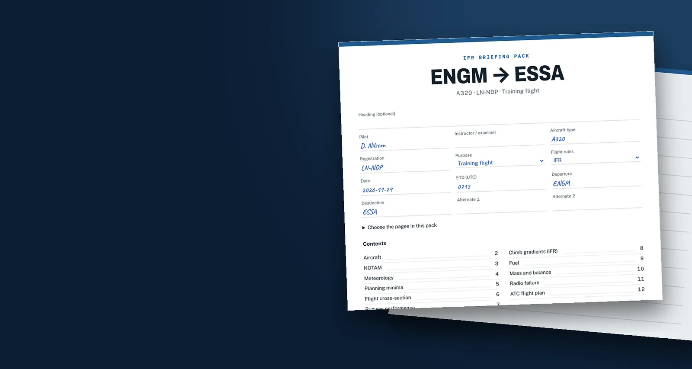
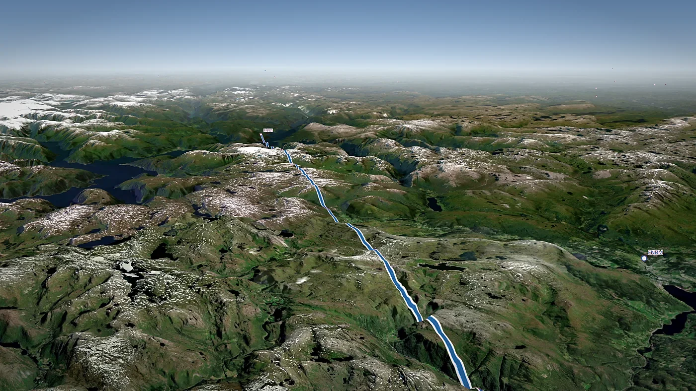
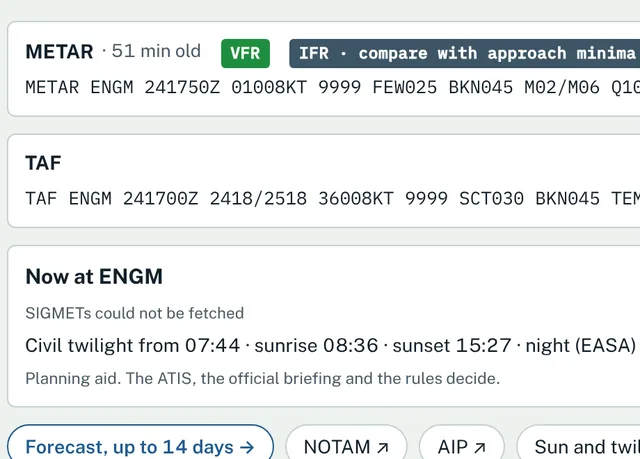
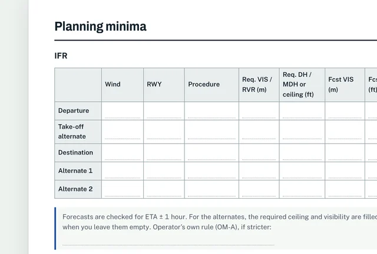
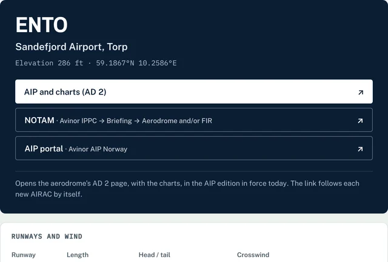
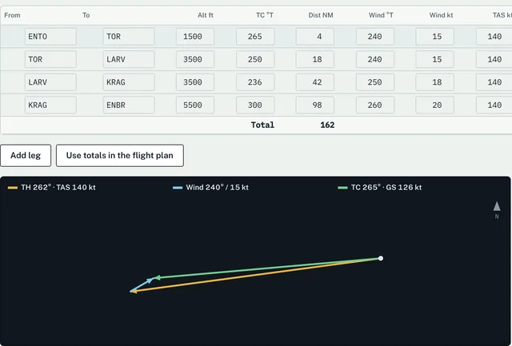

Preflight
The briefing pack for every flight, with Route Explorer when you want to see the route first.
- 1Start a packVFR or IFR, one per flight
- 2Fill it inNOTAM, minima, fuel and M&B
- 3Check the weatherMETAR, TAF and SIGMET
- 4Brief and printBrief it, then print or save

- VFR or IFR, ready to fill in
- NOTAM, weather, fuel, mass and balance
- Prints as a booklet or a PDF

- Highest terrain under the route
- Fly it in 3D over satellite imagery
- One button sends it to the pack




Briefing pack
The paperwork for one flight, in the order you need it, from the cover to the ATC flight plan.
Start a pack, choose VFR or IFR, and fill it in page by page. NORDAP works out what it can, you check every figure against the AIP, the flight manual and the official briefing, and the pack prints as a booklet for the flight.
21pages to choose from: aircraft, pilot, NOTAM, meteorology, planning minima, navigation log, cross-section, runway performance, climb gradients, fuel, mass and balance, radio failure, risk and the ATC flight plan.
- VFR or IFR
- A VFR pack with VMC minima, a nav log and a risk assessment, or an IFR pack with minima, alternates and gradients.
- Linked to the route
- Send a route from Route Explorer and its profile, markers and notes go in the pack with it.
- Briefing mode
- Go through the pack page by page before you walk out to the aircraft.
- Print or save as PDF
- The whole pack as a booklet, or the blank pages to fill in by hand.
Route Explorer
Visual route preparation: see what lies along the line before you plan it in ForeFlight or the Garmin.
Type two aerodromes, fixes or a whole route string. The map shows the line over the terrain with airspace, VFR points and obstacles, and the profile underneath gives the highest terrain along the way.
- Terrain profile
- The highest terrain under the route and near it, against your cruise altitude or a climb and descent.
- Fly it in 3D
- Chase, cockpit or overview along the route, with the margin to the terrain in colour.
- Go / no-go
- The points to check before the flight, and a nav log with headings, times and fuel for your wind.
- Into the pack
- One button sends the route, the profile and your notes to a briefing pack.
In four steps
Tools for the day
The pages you open next to the pack.
- WeatherMETAR, TAF and SIGMET now, the forecast up to 14 days, and every report decoded line by line.
- Aerodrome and AIPType an ICAO code and go straight to the official AIP and charts in force today, with NOTAM, the weather and daylight.
- Navigation logThe wind triangle per leg, fuel, and the ICAO flight plan format.
- Kneeboard sheetsBlank A5 sheets: the VFR operational flight plan, the IFR kneeboard and a risk assessment.
- VFR and IFR essentialsThe rules and numbers you look up most, on one page.
A preparation aid, not a source. Check every figure against the AIP, the flight manual, official weather and NOTAM, and your operator’s procedures.Data sources and licences